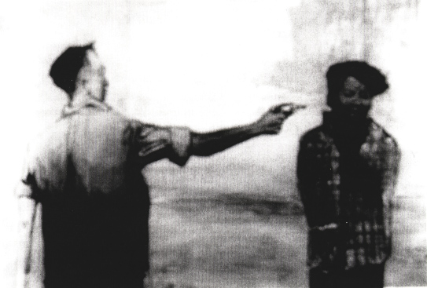
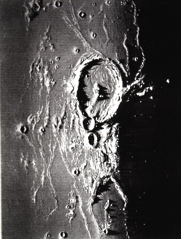
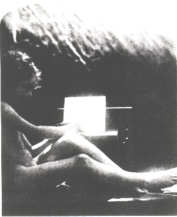

|
Mark Tansey's 1981 painting The Innocent Eye Test (Fig. 1)and Vik Muniz's 1994 photograph Two Cows(Fig. 2), both refer us back to historical debates about illusionism -- one in the realm of painting and the other of photography. While the debates over painting's ability or moral responsibility to realistically picture the world are well known, those of photography are less apparent. For photography's debate issued less over its capacity to accurately render its surroundings than over its acceptability as a medium of high art. Photography's illusionism was never questioned, rather its facile attainment of that illusionism questioned its artistic status, one that took almost a century to fully attain. So it is only with the ubiquity of digital imagery that "the innocent eye test" must be utilized for photography. In front of the Muniz, then, we, as viewers, have taken the place of Tansey's cow and are dared by the artist to believe in the fraudulence of his image -- a fraudulence that heretofore would have been a priori nullified by the very act of photographing. And this kind of trickery, daring, and illusory play -- all of which question the very essence of the photographic medium -- is at the heart of Muniz's photographic output. What follows is an excursion into the photographic bag of tricks offered us by the artist, critic, and curator Vik Muniz. Born and raised in São Paolo, Brazil, Muniz came to the United States in 1983. His activities as a critic and curator emerge in his photographic creations, which reflect a quizzical nature, an acute awareness of art history, and an impulse to collect and display other works and methods. An investigation into the ways that his works explore and expand the notions of ontology, difference, and modernism will reveal how Muniz the artist, the critic, and the curator all coalesce.
Ontology Whatever it grants to vision and whatever its manner, a photograph is always invisible: it is not it that we see.1 Roland Barthes Photography is the most transparent of the art mediums devised or discovered by man.2 Clement Greenberg Writing at different times and in different contexts, both Barthes and Greenberg note the inherent elusiveness of the congealing of forms on the photographic surface. One does not see brushstrokes or paint accumulation as on a canvas; photography is inescapably illusionistic. As both men discovered, the photographic signifiers (light, angle, focus, color, print quality, etc.) generally evade any viewing experience, leaving only the referent (the photographed object, space, body) to ponder. For Greenberg this defining quality would pose problems in his modernist schema as photography would be the one medium that could not be self-sufficient; it had to share with literature the goal of story-telling. While this led Greenberg to almost entirely avoid discussions of photography, it conversely drove Barthes to an obsessive and intense search for a photographic ontology. What little Greenberg did write of photography emphasized that its artistic merit resided in its anecdotal capacity. But beyond Greenberg, Barthes discovers photography's story-telling abilities to reside in more than just narrative subjects. He discovers the photographic "blind-field"3 or invisible and metaphysical region that connects image to viewing subject via memory -- what he would call the punctum. As such, Barthes finds value in both iconic and narrative photographs. In either case, however, both Barthes and Greenberg share an insistence on "artlessness" or the lack of artificiality. Both extoll photographs that respect a "natural" relationship to the "real" world and disparage those that thrive on superficiality, artifice, and theatricality as the work of tricksters, opportunists, and ideologues. 4 Muniz picks up where the semiotician and the critic left off, exploring the ontological parameters of the medium but doing so now with the medium itself, with photographs that at once adhere to and stray from the kind of natural relationship between photograph and referent privileged by Barthes and Greenberg. While his work depends upon photographic transparency, it also highlights the kind of magic tricks they so dismissed. Working primarily in series, Muniz pushes the limits of the medium by parasitically preying on photography's transparency while abandoning "real world" referents for both artificial ones (for drawings, assemblages, and constructions) and reproduced ones (his recreations derive from other photographs, memories, or works of art). The resulting groups of photographs exist as case-tests in photographic illusionism wherein the "truth-value" automatically accorded the medium is exposed as a cultural theology. In fact, a kind of nineteenth century fascination with his discoveries pervades his work and even prompts viewers to marvel at what should by now, considering our current digital era, be a marvel no more. His Best of Life series, for example, consists of photographs of drawings made from memories of famous photographs seen in the picture book The Best of Life -- a book he purchased at a garage sale in 1983. When I arrived in the United States in 1983, I spoke very little English and so initially did not make many new acquaintances. Reading the paper and watching TV were comforting because they were a way to participate in my new environment. I bought The Best of Life in a garage sale outside of Chicago. This book somehow made me feel safer. It made me feel more a part of the place where I was living...I lost the book in the summer of '88 on a beach in Long Island and felt really sad...I began to check how much I retained from the experience of these photographs...I'd transformed the image-memories into drawings.5  figure 3 Viewing Memory Rendering of Saigon Execution of Vietcong Suspect (Fig. 3), for example, in the absence of the original image for comparison facilitates the belief in the resulting photograph as the real thing; only after lengthy and close scrutinization (or the reading of a wall label) do we sense something odd and realize that this is a photograph of a drawing. And even more disconcerting is that the drawings are made from memory -- and not a memory of the actual event but of a multiply or rather infinitely reproduced image. These images provoke the question that has been posed to Muniz on many occasions: why not just exhibit the drawings? Why photograph them? Some viewers may even insist that these do not qualify as photographs but as drawings; that is, the images have the potential to force onlookers into an ontological quandary -- drawing or photograph? That he stirs such confusion points to his success in exploring the boundaries of the medium, one of which, as stated by both Barthes and Greenberg, is its inherent transparency. For in The Best of Life that transparency is what plays to his advantage, making his memory renderings both believable and more objective. Muniz notes: I thought [the memory drawings] should be returned to their photo state. So I photographed the drawings. When they were ready, I printed the photos with the same halftone screen the original pictures were printed on. People thought they were seeing bad reproductions of photographs of famous events, but in fact they were only looking at pictures of thoughts. They were convinced by the photographs because they have the same syntax as the real photos. It worked.6 He actually forces his viewers, in a few moments, into realizing that the transparency of the medium leads to photography's most magical quality: its testimonial capacity. The photograph authenticates. It proves that something or somebody passed before the camera's lens. So by photographing his drawings, Muniz pulls them out of the world of artifice and into the world of documentable observation. Hence, upon learning the trick he has played, we also learn about photography's very essence, about its ontological being as an index or trace. Difference But, as evidenced in the confusion over drawing or photograph, he also disturbs that essence. The photograph's existence may hinge upon its indexicality -- its causal relationship between world and image, or reality and representation -- but Muniz pushes that limit, contaminates it, infinitely opens it, and reverses the terms. Causality is inverted making the index now the stamp of the image on the world and not the other way around. In the Best of Life example discussed above it is not the real moment of war that caused the final photographic print, but the drawing of a mental image of a picture of a moment of war. Muniz deconstructs the metaphysical essence of photography as the trace of the real. That photography "reproduces to infinity what has only occurred once,"7 that it is contingent on the real, lends a certain metaphysic to the medium. Unlike other modes of representation, photography at once signifies by means of the cut or the incision made or the weight of the frame and by means of imperceptible connotative procedures such as spacing, seriality, lighting, angle, focus, and color, but also it rests silent and escapes signification. [change] This is its paradoxical quality and also what demarcates photography's privilege; it has often benefitted from the belief that it remains closer to a transcendental signified, to the inside, and to the soul in much the same way that Rousseau and Saussure proclaimed the advantage of speech over writing. But Muniz, through his photographic "weird science," turns this privileged metaphysic on its head and disrupts Barthes' photographic ontology, or onto-theology, which states that: Photography, the presence of the thing (at a certain past moment) is never metaphoric...the photograph... certifies... it is the living image of a past thing.8  figure 5 What Muniz exposes is not so much the fraudulence of photography's testimonial capacity, but the very notion of a real, of a truth, of an inside, and of a transcendental signified. And in so doing, he dislodges photography from any hierarchical relationship with other media as having more claim to truth and presence. So where Barthes describes photography as a past that is ever present, Muniz creates a photography that depicts a perpetual present with no past. This reversal becomes poignantly evident through a comparison of Muniz's 12,000 Yards (Etretat, after Courbet) (Fig. 4)from his Pictures of Thread series and James Nasmyth's Moon (Fig. 5), a photograph of a model constructed on the basis of drawings done while looking through a telescope in 1874. That photography emerged from a 19th century positivist philosophy is demonstrated in this book's use of photographic illustrations of which Nasmyth's Moon photograph (of a model based on a drawing) is a perfect example. For Nasmyth, drawing served the eye in its endeavor to come closer to the "objective" truth of nature: "in its act of tracing minute details, the eye-plus-hand-plus-telescope-plus-camera folds directly back onto the chiaroscural surface of the moon itself. This self-reflexive emphasis on the cause and effect of light and shadow is precisely what The Moon's illustrations illustrate....Since both the photographs and the details that are their objects are caused by 'lunar light and shadow', the book's illustrations add up to a self-reflexive method of explanation, according to natural 'laws of causation.'"9 The inductive method of the positivist philosophy, then, is acted out in the book's use of such photographic illustrations since they offer up details that lead back to larger, universal truths. Drawing, at the base of Nasmyth's Moon, serves not to disrupt the truth-value accorded photography, but to reiterate it. For Muniz, drawing will serve the obverse. In 12,000 Yards (Etretat, after Courbet), a photograph of a thread-drawing after a painting by Courbet, Muniz combines the medium of drawing with photography not toward any inductive reasoning (nor deductive), but against it. The viewer at one level gawks at the realization that Muniz was able to draw with thread, the fact of which is proved by its photographic facsimile. But at another level, the viewer is forced into acknowledging the forgery of the photographic surface which normally serves to prove that such a landscape or that Courbet's painting passed in front of the camera's lens. Those possible referents are lost, leaving only the proof of thread. That he drew in thread is seminal to this obfuscation; a photograph of the actual painting, of the actual landscape, or even of a pencil drawing would have reinforced the positivist remnants of our psyches. Now we are forced to realize that what is before us is a picture, a photograph, a sign within which exists another sign and so on. We can reason neither up the ascending ladder of induction, nor down that of deduction. And this enacts Muniz's point. While using drawing to disrupt positivist reasoning, he also uses it to play on the old hierarchical battle between drawing and painting and perhaps also to reinstate the original association of photography with drawing. In terms of the former, drawing in European academic circles long held the place of truth, soulfulness, intellectualism, and even masculinity, whereas painting, and especially painterliness, assumed the role of deception, passion, emotionalism, and femininity. By drawing with strange materials (wire, chocolate, sugar, thread) pictures of other paintings, such as 12,000 Yards discussed above or Milan (after Leonardo) from his chocolate series, Muniz confounds any last vestige of hierarchy.  figure 6 In terms of the special relationship originally felt between photography and drawing, Muniz reminds us to reflect on this. Looking at Julia Margaret Cameron's Cupid's Pencil of Light (Fig. 6)of 1870 wherein an infant stand-in for photography wields a light pencil seemingly marking with it on a sheet of paper, or reflecting on the title of the first photographically illustrated book by Talbot, The Pencil of Nature, which tells the English version of the medium's invention and points to the initial conception of photography as a mode of drawing or writing. Muniz's conflation of photography and drawing, then, brings photography full-circle. But by taking us back to its origins, he points out the misconceptions of that putative originary moment; he contaminates it by contaminating drawing itself. In the hands of Muniz drawing is not ideologically loaded with charges of intellectualism, soulfulness, and masculinity. For the pencil, he substitutes thread and chocolate -- two stereotypically female substances -- and for real-world models, he substitutes reproduced ones. Perhaps this kind of inverting signals an historically inevitable turn. When considering Barthes= privileging of non-metaphorical photographs (by which he means a photography that is little mediated) in Camera Lucida, though written in the eighties, suggests a nineteenth century sensibility.10 But today photographic imagery has become so prevalent that there can almost never be a non-metaphorical photograph as our memories of images are so enmeshed with our memories of real experience as to be indistinguishable. While Barthes' ontology depends on the difference between reality and image, between photography and other forms of representation, and between metaphor and index, Muniz effaces those differences. He puts it sous rature or "under erasure" à la Derrida and as such that difference is both dialectically resolved and invariably maintained.11 This difference which pervades all of his work from the Best of Life to the Pictures of Chocolate to the Equivalents series, and so on disrupts the notion of an originary photographed moment in the "real" world: Things look like things, they are embedded in the transience of each other's meaning; a thing looks like a thing, which looks like another thing, or another. This eternal ricocheting of meaning throughout the elemental proves representation to be natural and nature to be representational.12 Vik Muniz And all accomplish this by exploiting the inherent transparency of the medium. Modern/Postmodern But why talk about a medium or medium-specificity in a putatively post-medium, postmodern era? For Greenberg it had everything to do with essences and truth, with the inherent, natural and logical progression toward aesthetic purity. But certainly there is evidence that medium specificity was just a modernist myth, not a reality. A better way to think of it, perhaps, is not in terms of modern/postmodern but in terms of (post)modern -- that is a modern whose dialectical flip side has always been the postmodern (and the post-medium). The suspension of the circulation of gold money and the rise of inconvertible money has served many scholars as an indicator of the advent of modernity. Yet capitalist circulation with its free play of signs has also brought about those so-called harbingers of postmodernity: mixed media, decentering, impurity, etc.. The "post" in postmodern, then, is simply the Other of the modern. As such, Muniz's conflation of different media -- drawing, painting, and photography -- and different materials -- film, soil, sugar, cotton, wire, chocolate -- can be understood not so much as a manifestation of postmodernity but a continuation of the modernist project. Like Manet, Picasso, and others before him, Muniz makes art about art, wherein modernist self-reflexivity enters at the level of content. But while that was heretical for painting (according to aesthetic modernism), for photography the inverse is true -- since photography is inherently illusionistic, heresy occurs when that illusionism is shattered at the level of form. As unavoidably transparent, to respect the integrity of the photographic medium would be to maintain a natural relationship between form and content. But Muniz contaminates this putative integrity. If form in photography consists of barely perceptible signifiers, then Muniz forces these to materialize, making the transparency of the medium palpable and opaque. This is not a violation of modernism nor an indication of the advent of postmodernity, but simply evidence of the Other always at the heart of the modern. For example, his Action Photo I (After Hans Namuth) (Fig.7) acutely retards the speed of photographic transmission -- often likened to the privileged speed of speech -- by toying with the mediums transparency. Of course, we see right through to the referent, but that referent is now layered, shifting, and unstable. We see at one and the same time the chocolate, the recognizable and appropriated image formed by the chocolate, and then the figure and activity occurring within that appropriated image. To start, the chocolate -- a sign already laden with connotations of food, desire, seduction, femininity, cultural privilege, decadence and so on -- precludes immediate transparency, functioning as a kind of reflector within the photographic surface. Just as we enter, we are immediately bounced back out. Next, and not necessarily in this order, the familiar Namuth photograph now transformed into a chocolate painting provokes memories of Pollock, of his mythification, of this particular notorious photographic session, of the painting Autumn Rhythm, of Greenberg, of Abstract Expressionism, of the fifties, and even more so of the iconic status now accorded this photograph. Muniz presents us with the "infinite deferment of the signified,"15 with an "irreducible plurality of meaning."16 We can never really touch the original referential subject of Pollock in action; there no longer exists such a moment, there is no original. But this lack of originality, of stability, and of meaning, does not suggest the end of modernism but rather the Other of modernism that has always been at the core of its very existence. Finally, a discussion of Muniz's modernism should take into account his Brazilian heritage. Growing up in Sao Paolo and really coming of age during the military dictatorship that ruled Brazil from 1964 to 1984, Muniz cannot have escaped the influence of his native situation. Sao Paolo, in particular, had long since been receptive of European modern art, with its biennial art show beginning in 1951 and with the presence of international financiers. As it had at times been perceived as such in Europe, the mere use of unconventional, unrealistic form was perceived as a political statement -- to the Left, of course, and against the reigning dictator. To be an innovative or progressive artist, then, was to put one's life on the line and was necessarily a political act. One Argentinean critic has defined Brazilian modernism in opposition to Greenberg's Americanized version. Noting that the Brazilian variety stems from Oswald de Andrade's notion of anthropophagism or cannibalism, he writes: Cannibalism promotes phenomena of contagion and contamination and ultimately leads inexorably to a poetics of displacement and hyperbole. This is why it is not surprising that Brazilian modernism may be defined as the gathering of an esthetic knowledge through a certain analytic, intuitive operation that may be called "work of art" and the consequent projection of that knowledge on the rest of the epistemological field in order to disorganize it, producing in it partial reconfigurations. This movement did not happen once and for all, but rather each artist, each work of art, grabs hold of it in a never ending way.17 This notion of cannibalism refutes the notion of autonomy at the heart of Greenbergian modernism; rather, it functions like the post in (post)modernity, occupying that space of the Other and engendering the free play of difference. As aforementioned, this play is ever present in Muniz's work and perhaps, then, derives from his Brazilian background. And, finally, if this "cannibalism" entails problematizing epistemological fields, then Muniz definitely partakes in it. Considering the abundance of photographic images that appear on billboards, urban walls, magazines, journals, and that are digitally coded to flash on outdoor LCD screens and on internet portals, our modes of knowledge-formation are more than ever dependent upon photographs. By revealing to us the nature of the photographic medium and by contaminating it, Muniz has positioned himself as an avant-gardist participating in an important political, intellectual, and (ongoing) modernist project. |